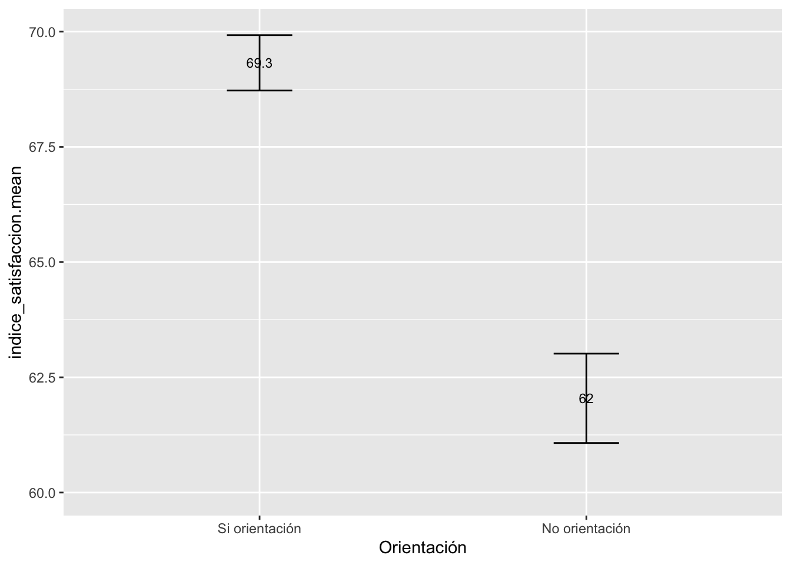

Práctica dirigida 4

Recordando lo avanzado
En la sesión anterior de teoría, nos adentramos al análisis inferencial bivariado, teniendo como base del tema el cálculo del Intervalo de Confianza (IC) para una media (variables numéricas) y para una proporción (variables categóricas). Recordemos que gracias al IC podemos determinar si la estimación es representativa de la población. La idea era calcular los intervalos de confianza para cada grupo y ver si los intervalos se interceptan o no. La regla era que si los intervalos de ambos grupos no se interceptaban, podíamos extrapolar que la diferencia muestral existe en la población al 95% de confianza.
Para profundizar sobre estadística inferencial, evaluaremos las hipótesis mediante la introducción a la prueba t de diferencia de medias y desarrollaremos los cincos pasos de la inferencia estadística. Recordemos que el objetivo es corroborar que es posible extrapolar un resultado de la muestra a la población.
¿Qué es la prueba T de diferencia de medias?
Generalmente, cuando queremos comparar dos grupos centramos nuestra atención en el promedio de cada uno. Sin embargo, el hecho de que los promedios sean distintos no supone, necesariamente, que existe una diferencia estadísticamente significativa.
Para saber si la diferencia observada entre las medias de dos grupos es o no significativa se emplean métodos paramétricos como el de Z-scores o la distribución T-student. Estas técnicas calculan los intervalos de confianza de cada grupo y concluyen si existe una diferencia real entre las medias.
La prueba T compara la media de una variable numérica para dos grupos o categorías de una variable nominal u ordinal. Los grupos que forman la variable nominal/ordinal tienen que ser independientes. Es decir, cada observación debe pertenecer a un grupo o al otro, pero no a ambos.
Pruebas T para muestras independientes
Condiciones
Independencia: Las muestras deben ser independientes. El muestreo debe ser aleatorio.
Igualdad de varianza: La varianza de ambas poblaciones comparadas debe ser igual.
La variable numérica se distribuye de manera normal.
IMPORTANTE
La condición de normalidad también es considerada si es que la muestra fuera pequeña (Agresti y Finlay proponen que se aplica con un n pequeño menor a 30 observaciones). A medida que el n se hace más grande, el supuesto de normalidad es menos importante pues con grandes n confiamos en el teorema del límite central que nos indica que la distribución muestral será siempre normal.
Pasos para realizar la Prueba T
- Establecer hipótesis
- Calcular el estadístico (parámetro estimado) que se va a emplear
- Determinar el nivel de significancia α (alpha)
- Calcular el p-value y realizar la prueba prop.test
- Interpretar
Recuerda El H0 de la prueba T es la siguiente:
Ho: No existe diferencia estadísticamente significativa entre las medias de los dos grupos comparados.
H1: Sí existe diferencia estadísticamente significativa entre las medias de los dos grupos comparados.
La H0 es generalmente la hipótesis de no efecto, de no diferencias.
Indicador Proxy
También llamado indicador indirecto, se usa ante la imposibilidad de medir lo que efectivamente es de importancia. El indicador mide una variable distinta a la que nos interesa de manera específica, pero presenta una relación lo más directa posible con el fenómeno en estudio.
Un indicador proxy es una medición o señal indirecto que aproxima o representa un fenómeno en la ausencia de una medición o señal directo.
Por ejemplo, el número de miembros femeninos de una cámara de comercio podría ser un indicador proxy para el porcentaje de dueñas de negocios o ejecutivas.
Indicador Aditivo
Pasos para construir un indicador:
- Verificar que las variables que construyan el indicador correspondan al concepto que se desea medir. Ejemplo: Si deseo mejor Satisfacción del Usuario, las preguntas deben ser sobre ello.
- Revisar el cuestionario e identificar el sentido de las categorías. Ejemplo: El valor 5 es “Muy instafisfecho” y 1 “Muy satisfecho”
- Si las categorías de las variables están en el correcto sentido proceder a sumarlas, si no lo están, proceder a recodificarlas para luego sumar.
- Una vez realizada la suma, identificar el mínimo y el máximo.
- Restar a todos los valores el valor mínimo.
- Al resultado de lo anterior, dividir por el nuevo máximo, con ello, se va a obtener valores entre 0 y 1.
- Multiplicar por 100 si se desea el índice de 0 a 100, o por 10 si se desea el índice de 0 a 10.
Apliquemos lo aprendido
Carguemos la base de datos
Descripción del Proyecto: Satisfacción de la ciudadanía con los servicios públicos transaccionales en regiones
Este estudio fue realizado por la Secretaría de Gestión Pública de la Presidencia del Consejo de Ministros en el año 2021. El propósito del estudio consistió en identificar los conductores de calidad (variables explicativas) en la satisfacción de una persona con la realización de un servicio público transaccional (duplicado de DNI, pago en el Banco de la Nación, pasaporte, etc).
Se identificó que los factores que impactan en las regiones respecto a la satisfacción sobre los servicios públicos son: i. el tiempo de desplazamiento hacia la sede de la entidad, ii. la calidad del trato, iii. la rapidez del trabajador, iv. el procedimiento de atención, v. el resultado de la gestión, y, vi. la confianza.
Lo que buscaremos en este ejercicio es corroborar que los grupos de edad hasta 35 años y mayor a 35 años tienen diferencias estadísticas sobre el nivel de satisfacción.
Más sobre el proyecto accediendo al siguiente enlace: https://www.gob.pe/institucion/pcm/informes-publicaciones/2244351-estudio-en-las-regiones-del-peru-que-factores-influyen-en-la-satisfaccion-de-las-personas-con-los-servicios-publicos-brindados
#No olvides cambiar el directorio de trabajo
library(rio)
data=import("data.sav")Exploramos las variables que tiene la base de datos:
Utilizamor str para ver la estructura de la data.
Utilizamor colnames para verificar los nombres de la data.
str(data[,1:10]) #Visualice la estructura de la bbdd## 'data.frame': 4142 obs. of 10 variables:
## $ SbjNum : num 1.52e+08 1.52e+08 1.52e+08 1.52e+08 1.52e+08 ...
## ..- attr(*, "label")= chr "SbjNum"
## ..- attr(*, "format.spss")= chr "F10.0"
## $ d3 : num 17 17 17 17 24 24 10 10 14 23 ...
## ..- attr(*, "label")= chr "DC3d. ¿En qué departamento vives?"
## ..- attr(*, "format.spss")= chr "F8.0"
## ..- attr(*, "labels")= Named num [1:26] 1 2 3 4 5 6 7 8 9 10 ...
## .. ..- attr(*, "names")= chr [1:26] "Amazonas" "Áncash" "Apurímac" "Arequipa" ...
## $ PROVINCIA : num 1701 1701 1701 1701 2401 ...
## ..- attr(*, "label")= chr "DC3p. ¿En qué provincia vives?"
## ..- attr(*, "format.spss")= chr "F8.0"
## ..- attr(*, "labels")= Named num [1:196] 101 102 103 104 105 106 107 201 202 203 ...
## .. ..- attr(*, "names")= chr [1:196] "Chachapoyas" "Bagua" "Bongará" "Condorcanqui" ...
## $ DISTRITO : num 170101 170101 170101 170101 240101 ...
## ..- attr(*, "label")= chr "DC3dd. ¿En qué distrito vives?"
## ..- attr(*, "format.spss")= chr "F8.0"
## ..- attr(*, "labels")= Named num [1:1874] 10101 10102 10103 10104 10105 ...
## .. ..- attr(*, "names")= chr [1:1874] "Chachapoyas" "Asunción" "Balsas" "Cheto" ...
## $ ORGANIZACION: num 71 71 71 71 6 71 21 21 71 71 ...
## ..- attr(*, "label")= chr "ORGANIZACION - ENTIDAD:"
## ..- attr(*, "format.spss")= chr "F8.0"
## ..- attr(*, "labels")= Named num [1:86] 1 2 3 4 5 6 7 8 9 10 ...
## .. ..- attr(*, "names")= chr [1:86] "Gobierno Regional de Ancash" "Gobierno Regional de La Libertad" "Gobierno Regional de Lambayeque" "Gobierno Regional de Cajamarca" ...
## $ A : num 1 1 1 1 1 1 1 1 1 1 ...
## ..- attr(*, "label")= chr "A. ¿Acepta usted participar en este estudio? (Una respuesta)"
## ..- attr(*, "format.spss")= chr "F8.0"
## ..- attr(*, "labels")= Named num [1:2] 1 2
## .. ..- attr(*, "names")= chr [1:2] "Sí" "No"
## $ B : num 31 24 26 27 21 52 40 23 48 20 ...
## ..- attr(*, "label")= chr "B. ¿Cuántos años tiene? (Una respuesta)"
## ..- attr(*, "format.spss")= chr "F8.0"
## $ D : num 1 1 5 4 4 2 2 5 3 2 ...
## ..- attr(*, "label")= chr "D. ¿Cuál es el principal motivo por la que acudió a esta entidad? (Una respuesta)"
## ..- attr(*, "format.spss")= chr "F8.0"
## ..- attr(*, "labels")= Named num [1:22] 1 2 3 4 5 6 7 8 9 10 ...
## .. ..- attr(*, "names")= chr [1:22] "Solicitud de información, consulta" "Una gestión/trámites sin pago" "Una gestión/trámite con un pago correspondiente a esa gestió" "Reclamo" ...
## $ E : num 3 1 1 1 1 1 4 4 3 1 ...
## ..- attr(*, "label")= chr "E. ¿La gestión que realizó fue personal o por encargo de terceros? (Una respuesta)"
## ..- attr(*, "format.spss")= chr "F8.0"
## ..- attr(*, "labels")= Named num [1:6] 1 2 3 4 6 98
## .. ..- attr(*, "names")= chr [1:6] "Personal con fines personales" "Personal con fines de negocios" "Por encargo de terceros con fines personales" "Por encargo de terceros con fines de negocio" ...
## $ P1 : num 2 2 2 2 2 2 4 4 2 1 ...
## ..- attr(*, "label")= chr "1. Pensando en la experiencia que acaba de tener hoy en {0} y utilizando la siguiente escala (Mostrar tarjeta)."| __truncated__
## ..- attr(*, "format.spss")= chr "F8.0"
## ..- attr(*, "labels")= Named num [1:5] 1 2 3 4 5
## .. ..- attr(*, "names")= chr [1:5] "Muy satisfecho" "Satisfecho" "Ni satisfecho / ni insatisfecho" "Insatisfecho" ...colnames(data[,1:10]) #Visualice los nombres de las variables de la bbdd## [1] "SbjNum" "d3" "PROVINCIA" "DISTRITO" "ORGANIZACION"
## [6] "A" "B" "D" "E" "P1"Limpieza de las variables previo al análisis: a. Seleccionar variables que conceptualmente generen un índice de satisfacción. Revisar preguntas en encuesta.
Según el cuestionario, 5 significa muy insatisfecho y 1 significa muy satisfecho.
P10 = satisfacción con trabajador que lo atendió
P25 = satisfacción con tiempo de espera desde que llegó a la entidad hasta ser atendido
P30 = satisfacción con el proceso de gestión / trámite realizado (cantidad de documentos)
P31 = satisfacción con la cantidad de pasos requeridos para completar gestión / trámite
Si deseamos crear un indicador de satisfacción, entonces el máximo valor debe ser la calificacion más alta de satisfacción, y por tanto el valor mínimo dede mostra la insatisfacción. Dado que es cuestionario, no pregunto de esta manera, entonces tenemos que cambiar los valores de la siguiente manera:
1 ‘Muy satisfecho’ a 5
2 a 4
3 a 3
4 a 2
5 ’Muy insatisfecho’a 1
Ojo: Si bien estas variables deberían estar catalogadas como factor, para poder crear el índice necesitamos que se mantengan como numéricas para poder sumarlas.
summary(data$P10)## Min. 1st Qu. Median Mean 3rd Qu. Max.
## 1.000 2.000 2.000 2.145 2.000 5.000summary(data$P25)## Min. 1st Qu. Median Mean 3rd Qu. Max.
## 1.000 2.000 2.000 2.437 3.000 5.000summary(data$P30)## Min. 1st Qu. Median Mean 3rd Qu. Max.
## 1.000 2.000 2.000 2.344 3.000 5.000summary(data$P32)## Min. 1st Qu. Median Mean 3rd Qu. Max.
## 1.000 2.000 2.000 2.391 3.000 5.000- Recodificar los valores de las variables
Ejemplo: La recodificación de una variable a la vez.
library(dplyr)
data=data %>%
mutate(satisfaccion_trabajador=case_when(
P10 == 1 ~ "5",
P10 == 2 ~ "4",
P10 == 3~ "3",
P10 == 4 ~ "2",
P10 == 5 ~"1"),
satisfaccion_tiempo=case_when(
P25 == 1 ~ "5",
P25 == 2 ~ "4",
P25 == 3~ "3",
P25 == 4 ~ "2",
P25 == 5 ~"1"),
satisfaccion_n_documentos=case_when(
P30 == 1 ~ "5",
P30 == 2 ~ "4",
P30 == 3~ "3",
P30 == 4 ~ "2",
P30 == 5 ~"1"),
satisfaccion_n_pasos=case_when(
P31 == 1 ~ "5",
P31 == 2 ~ "4",
P31 == 3~ "3",
P31 == 4 ~ "2",
P31 == 5 ~"1"))Verifiquemos que nuestra recodificación se realizó de manera correcta.
table(data$P10)##
## 1 2 3 4 5
## 619 2724 415 349 35table(data$satisfaccion_trabajador)##
## 1 2 3 4 5
## 35 349 415 2724 619La recodificación de un conjunto de variables.
#library(dplyr)
#data=data %>%
# mutate(across(c(P10,P25, P30,P31),
# ~ case_when(. == 1 ~ "5",
# . == 2 ~ "4",
# . == 3~ "3",
# . == 4 ~ "2",
# . == 5 ~"1")))- Convertir las variables a numéricas
library(dplyr)
data=data %>% # objeto base de datos cargada
mutate(satisfaccion_trabajador = as.numeric(satisfaccion_trabajador),#recategorizamos nuestras nuevas variables como numéricas
satisfaccion_tiempo = as.numeric(satisfaccion_tiempo),
satisfaccion_n_documentos = as.numeric(satisfaccion_n_documentos),
satisfaccion_n_pasos = as.numeric(satisfaccion_n_pasos))summary(data$satisfaccion_trabajador)## Min. 1st Qu. Median Mean 3rd Qu. Max.
## 1.000 4.000 4.000 3.855 4.000 5.000summary(data$satisfaccion_tiempo)## Min. 1st Qu. Median Mean 3rd Qu. Max.
## 1.000 3.000 4.000 3.563 4.000 5.000summary(data$satisfaccion_n_documentos)## Min. 1st Qu. Median Mean 3rd Qu. Max.
## 1.000 3.000 4.000 3.656 4.000 5.000summary(data$satisfaccion_n_pasos)## Min. 1st Qu. Median Mean 3rd Qu. Max.
## 1.000 3.000 4.000 3.585 4.000 5.000Recordemos los pasos para crear un índice aditivo:
((var_suma - mín_de_suma)/máx_de_suma))*valor al que quiere que llegue el índice(si va del 0 al 10 será 10, del 0 al 50 será 50, etc).
Crearemos una variable nueva “indice_satisfacción”. Sumamos las variables
data=data %>%
mutate(suma = satisfaccion_trabajador +
satisfaccion_tiempo +
satisfaccion_n_documentos +
satisfaccion_n_pasos)Revisamos mínimo y máximo
summary(data$suma)## Min. 1st Qu. Median Mean 3rd Qu. Max.
## 4.00 13.00 16.00 14.66 16.00 20.00data=data %>%
mutate(resta = ((suma - 4)# Menos el minimo
/ 16), # Cuarto paso: dividir entre el nuevo máximo
indice_satisfaccion = resta * 100) #Queremos que el índice va del 1 al 100Opción 2: Sin crear variable “resta”
#data = data %>%
# mutate(indice_satisfaccion = ((suma-4)/16)*100) summary(data$indice_satisfaccion)## Min. 1st Qu. Median Mean 3rd Qu. Max.
## 0.00 56.25 75.00 66.62 75.00 100.00- Los grupos que compararemos serán dados por la variable P4. Damos formato a la variable categórica P4, si recibio orientación o no
data$P4=as.factor(data$P4)
data$P4=factor(data$P4,
levels = levels(data$P4),
labels = c("Si orientación","No orientación"),
ordered = F)Realizamos la Prueba T
Primer paso: Establecer la hipótesis.
La hipotesis de la prueba T queda establecida de la siguiente forma:
Ho: No hay diferencia entre las medias del índice de satisfacción aditivo entre los grupos hasta 30 años de edad y más de 30 años de edad. (no diferencia de medias)
H1: Si existen diferencias entre las medias del índice de satisfacción aditivo entre los grupos hasta 30 años de edad y más de 30 años de edad. (sí diferencia de medias)
Ambas hipótesis son acerca de los parámetros de la población.
Segundo paso: Calcular el estadístico a emplear
Para verificar la diferencia de medias se calcula el estadístico T, y uno de los primeros pasos es calcular las diferencias entre las medias muestrales, ya que es lo quiero extrapolar y por tanto saber si existe o no una diferencia significativa entre las medias poblacionales de ambos grupos:
library(lsr)
tabla=data%>%
group_by(P4) %>%
summarise(Desviacion = sd(indice_satisfaccion, na.rm=T),
Media = mean(indice_satisfaccion, na.rm=T),
min = ciMean(indice_satisfaccion,conf = 0.95, na.rm=T)[1],
max = ciMean(indice_satisfaccion,conf = 0.95, na.rm=T)[2],
n=length(indice_satisfaccion))
tabla## # A tibble: 2 × 6
## P4 Desviacion Media min max n
## <fct> <dbl> <dbl> <dbl> <dbl> <int>
## 1 Si orientación 15.6 69.3 68.7 69.9 2606
## 2 No orientación 19.4 62.0 61.1 63.0 1536Tercer paso: Determinar el nivel de significancia
Se trata de la probabilidad que define qué tan inusual debe ser la diferencia de medias muestrales para rechazar la H0 (que la diferencia de medias poblacionales sea 0). El valor más común es de α=0.05 a un nivel de confianza de 95%. De manera convencional establecemos la siguiente regla para nuestra prueba T:
- p-value<=0.05 Rechazo la H0 y acepto H1
- p-value>0.05 No rechazo la H0
Cuarto paso: Calcular el p-value y realizar la prueba t.test
El p-value mide la probabilidad de observar en una muestra una diferencia de medias como la observada, si la diferencia de medias poblacional fuera cero.
t.test(indice_satisfaccion ~ P4, data = data,
alternative = "two.sided",
conf.level = 0.95 #nivel de confianza (95%)
)##
## Welch Two Sample t-test
##
## data: indice_satisfaccion by P4
## t = 12.521, df = 2706.3, p-value < 2.2e-16
## alternative hypothesis: true difference in means between group Si orientación and group No orientación is not equal to 0
## 95 percent confidence interval:
## 6.139042 8.418809
## sample estimates:
## mean in group Si orientación mean in group No orientación
## 69.32320 62.04427Quinto paso: Interpretar
¿Cómo interpreto?
Recordando nuestras hipotesis:
Ho: No hay diferencia entre las medias del índice de satisfacción aditivo entre los grupos hasta 30 años de edad y más de 30 años de edad.
H1: Si existen diferencias entre las medias del índice de satisfacción aditivo entre los grupos hasta 30 años de edad y más de 30 años de edad.
Asimismo, en el paso 4, determinamos el nivel de significancia de la siguiente manera:
Si el p-value del t test es <=0.05 Rechazo la H0 y se afirma H1.
Si el p-value del t test es >0.05 No rechazo la H0
Entonces, vemos que el p-value es 0.005803, y es menor al alpha (0.05), entonces rechazo la H0, por tanto, existe una diferencia estadísticamente significativa entre las medias del índice de satisfacción aditivo entre los grupos hasta 30 años de edad y más de 30 años de edad con un 95% de confianza.
Paso FINAL: Graficar
Otro método para evaluar la comparación entre grupos es realizar un gráfico de medias con intervalos de confianza de cada grupo.
Para calcular la diferencia de medias
library(Rmisc)
ic_grupo = group.CI(indice_satisfaccion~P4,data)
ic_grupo## P4 indice_satisfaccion.upper indice_satisfaccion.mean
## 1 Si orientación 69.92385 69.32320
## 2 No orientación 63.01339 62.04427
## indice_satisfaccion.lower
## 1 68.72254
## 2 61.07515Barras de Error
library(ggplot2)
ggplot(ic_grupo, aes(x= P4, y =indice_satisfaccion.mean)) +
geom_errorbar(aes(ymin=indice_satisfaccion.lower, ymax=indice_satisfaccion.upper), width = 0.2)+
geom_text(aes(label=paste(round(indice_satisfaccion.mean,1))), size=3)+
xlab("Orientación") +
ylim(60, 70)
Interpretación: Tal como se observa ambos intervalos de confianza no se traslapan, por lo que se puede concluir gráficamente que existe una diferencia estadísticamente significativa entre los grupos. El grupo que si recibio orientación tiene mayor satisfacción que no recibio con un 95% de confianza en la población.
EJERCICIO PRÁCTICO
Verifica si existe o no relación entre el número de veces que un ciudadano fue a la institución pública para realizar un trámite transaccional (grupo 1 sola vez vs grupo más de 1 vez) y el índice de satisfacción.
=============================================================================
Finalmente, no olvidemos exportar el Rmd en formato PDF o Html, usando Knit
Para Html, seleccionamos en el menú Knit > Knit to html
Para pdf, seleccionamos Knit > Knit to PDF, pero antes de exportar en pdf deberá instalar lo siguiente desde su consola:
#install.packages('tinytex')
#tinytex::install_tinytex()